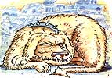

LAST LAUGH
Well, sir, leaf-peepin' season, the time o' year when caravans of city folks drive 'round starin' at fall-colored trees, hez been hard upon Plumtree Crossin' fer weeks now. Still, the fellers of the Plumtree Crossin' Genial Assembly weren't expectin' the dog-an'tourist story Lafe Higgins brought by the other day.
Ever'body knew the pooch in question, the biggest, meanest speciment of dog seen in these parts since Clarence Smithers' hound choked on a steer's head. It wuz a cross, Newt Blanchard claimed, between a horse fer size an' a piana fer teeth, if someone hed filed the keys to a p'int, an' its eyes wuz as evil as cream o' sin. Bark? Heck no, the dog seemed to say, the chain makes enough noise when I come fer ya. Seems as if Lafe's uncle, who owns the junkyard over to Erosion junction, hed to go into the city last Sunday, an' he left his collection o' dead cars an' school buses in the paws o' this aforementioned dog-name o' Juggler, on accounta his fondness fer thet partickalar hose inside the human neck.
Unc Higgins hez hed thet dog since it were a pup thet weighed only a couple hunnert pounds. Seems as though he weren't perzackly a watchdog so much as a air-breathin' shark. Now thet day, Lafe was workin' in the shop next to the Edsel cemetery, on a of '53 Hudson he's jist about weaned offa oil, when this humongous motorin' home come up the road. It pulled up, wheezin' like a gunny sack fulla bagpipe parts, an' stopped. This cityslicker opened the window an' whispered, "Hey, how far to the freeway, bub?" Lafe slid out, an' dusted off his back as he thought about thet, an' finally allowed thet it wuz only 80 mile as the crow flies, but if the crow hed to drive 'er, it would be closer to a lot more. Thet fact let the air outa the slicker, an' he run his smooth hands over his curly hair, tugged on the bill of his admiral's cap an' said a word you jist don't hear much around Plumtree on Sundays. Lafe was fixin' to go back under the Hudson when the slice o' city life inquired if he hed a dewhizulator on hand to fix his busted offgrommatoon. Lafe, who can diagnose an' identify every vehicle ailment known to man, just gave a loud snort.
"Shhh! My wife's in back sleeping," the slicker hissed, "and she doesn't need to know I took a wrong turn. If you can fix this thing, it's worth 20 bucks extra to me." Lafe peered inside fer two seconds, an' pernounced, "You need a new rascalatin' arm fer yore zipperwheel, an' if you wanna wait until the boss gits back, there's one on thet there bus." He jerked a thumb at a big yeller wreck behind the junkyard fence. The city dude jist shook his head.
"Listen, sport, make it 50 bucks if you can do it in half an hour. My wife already thinks I can't read a map, and I want to be back on pavement before she wakes up. Why wait for the boss?" And he peeled U.S. Grant off a roll thet looked like it come from a Pentagon toilet stall, holdin' it up like a kid's first fish. But Lafe weren't even tempted. He pointed back to where ol' Juggler wuz chawin' up rib bones like they wuz pretzels, an' said in a voice he saved fer funerals, "Thet's why, mister. Dead men don't need money much, an' to tell the truth, I don't feel real safe in plain sight like this, bein' as how thet dog ain't tasted no human flesh fer a while, an' only a rusty anchor chain aholdin' him." The dinosaur pilot smiled at Lafe an' went to the back o' the metal Conestogy. Pretty soon he brung out a chunka hamburger the size of a cannon shot. "OK, this should knock him out," he laughed, tossin' thet beefy ball inside the danger zone o' the dog's tether. "I put in a few of the wife's tranquilizers.
" Juggler sorta inhaled it down so as not to get his sparklin' teeth dirty, an' wiped his chops with a tongue like a pink razor strop. Sure enough, in two minnits juggler keels over and commences to snore, so Lafe said a few prayers, gathered up his tools an' streaked fer the bus, the city feller right behind him. "We gotta work fast," Lafe panted, whippin' of the bus hood an' yankin' out parts, " 'cause we ain't safe long as thet dog hez breath in his body." It took him only 110 seconds o' rapid wrench-twiddlin' to free up the rascalatin' arm, an' one more to race back outa the yard. Thet son o' suburbia wuz laughin' at Lafe's keenish love o' life, as he moseyed right past juggler's food bowl, callin', "You worry too much, hayseed.
This dog can't hurt-" an' thet's as far as he got" 'Cause Juggler reared up, eyes closed but teeth bared, an' chomped a mouthful o' pant leg. He wuz somnambulatin' so hard thet the sudden screamin' didn't even wake him-but his steel jaw wuz locked. The dude came outa those pants like a banana outa its peel, an' skivvied the 50 feet back to his roadhoggin' house, slammed the door an' locked her.
Lafe's itemized bill (he finished the job in half the time, since his adrenaline wuz still drippin' like warm-spell maple sap) included: parts, one dollar; labor, two dollars; enough likker to stop his hand shakin', three dollars; an' the 50 dollars danger pay as promised. He slid the bill under the door, an' the money slid out, an' the motorin' home fired up an' took off like a square missile.
'Bout a month later, a letter come, registered an' special dee-livery, askin' Lafe to please send by return mail the wallet thet wuz in them pants. Natcherly, Lafe sent back a nice reply explainin' thet said wallet wuz all over the yard, but not to worry about the credit cards 'cause they wuz no longer usable. An' if he wanted proof, it would have to ar rive in a mailin' tube.
- Jeff Taylor
|
 |
|
|